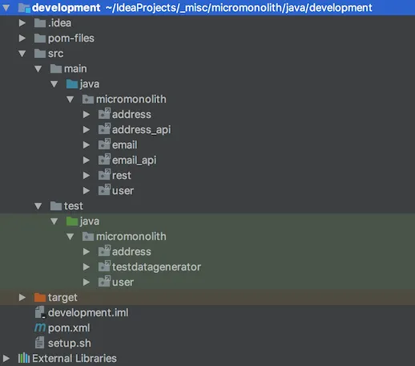

Tengstrand's Blog
The search for simpler code while having fun.
The search for simpler code while having fun.
Note: The Micro Monolith architecture has been replaced by the Polylith architecture, which has abandoned symbolic links and dependency injection in favor of simple configuration.

Writing quality software, with thousands or millions of lines of code, is probably one of the most challenging and complex tasks you can undertake. Here I will present an alternative, amazingly simple way of modularising software, complete with code examples in Java and Clojure!
When a system grows it will eventually reach a point when it becomes hard to manage as a single monolith. For every line of code that is added, the system becomes harder to understand, change and reuse. Microservices try to address these problems but also bring extra complexity and an increased cost of integration.
The core principle in the Micro Monolith1 architecture is to keep the hardware, software and the data close together in one place. By doing so we can simplify things and get rid of unnecessary coordination. The performance will also be improved if we have direct access to the data from one place. If we design our systems using small, isolated, and composable building blocks (like Microservices) but execute them from one place (like a monolith), we get the best of both worlds.
Each service is stored as a project in the version control system, with the ability to build its own JAR (if running on the JVM — or similar on other platforms). They become the building blocks in the production environment that we use to compose our systems. In the development project we link all the source code from the services, so that we can work directly with the code as if it was a single project.
Let’s continue by summarising the pros and cons of the Micro Monolith approach:
(*) You are not forced to use only one programming language, but to achieve all the benefits you get from the development setup (like refactoring and debugging across services) then by far the best option is to stick with one language. The second best is to use a mix of languages that can run on the same platform (e.g. the JVM) like Java, Scala, JRuby and Clojure (and C if using the native interface JNI), but then you also need to build a new JAR every time you make a change in a service so that it can be shared to other services. You always have the option to write some of the services as Microservices, but then you lose the benefits that come with the Micro Monolith architecture for these services.
We have talked about the concepts behind the Micro Monolith approach but not so much about how it works in practice, so let’s do that by showing two code examples in Java and Clojure. All the code examples can be found here.
Note: in a real system, they would have been stored in separate repositories, isolated from each other, but for convenience they are here stored in a single repository.
The Java and the Clojure examples implement the same “solution”, a fake REST API that orchestrates a number of services and exposes findAddresses, doUserStuff, and doMoreUserStuff.
Java is a popular language that we will use to show how the Micro Monolith architecture can look like in an object oriented language.
The development project is the place where you will spend most of your time as a developer. Even though all our services are stored as separate version controlled projects (Git in our case) we use a clever trick to bring all the source code together into a single project (one place) by using symbolic links2. The IDE doesn’t care if the directories are “real” or just links, but will mark them with an arrow in the IDE (at least in the one we use in this example):
After the project has been checked out locally, the links will work out of the box in Linux or Unix, but on other platforms you might need to create the development project manually with a script similar to this.
With this project setup we achieve all the benefits we normally get from a modern development environment, even across services. That includes debugging, refactoring, and searching. This is very powerful and time saving. We don’t need to rebuild services every time we change the code which makes the workflow very efficient and joyful!
When designing the system we need to decide if we allow services to have knowledge about concrete implementations of external libraries or not. In this example we allow that. As a result of that decision, it’s a good idea to use the same version of libraries across all services.
The other option is to integrate internal services with external libraries by adding interfaces between them. So instead of allowing a service to know about a concrete library like log4j-1.2.17.jar, we instead create the interface log4j-api that the orchestrator service injects2 into the services that need it.
The orchestrator service is the place where we put the services together. A system can have more than one orchestrator service, but in this example we only have the RestService. Its dependencies to address, email, and user services are specified in pom.xml.
If service A needs to call function f in service B, then function f is injected2 into A by the orchestrator service. It’s not mandatory to only inject one function at a time, but it will increase the changeability and the testability by making the services less coupled to each other. We will use the term micro injection when referring to the concept of injecting one function at a time.
The Micro Monolith architecture encourages testing by making it both simple and easy. Just as with Microservices, it’s easier to test every service in isolation. An advantage compared to Microservices is that it is simpler to test the whole system because it is deployed as a single piece on one machine (our REST API in this example).
This example includes a test data generator that help us set up the database in a known state. You may have a user table with a relationship to the address table. You then may have a UserService and an AddressService. The test-data-generator lets you easily set up a known state of the database, which facilitates the writing of integration tests. This can be done both within a service and across services, for example AddressServiceTest and UserServiceTest.
Clojure is a powerful functional language that runs on top of the JVM. We will use Clojure to show how the Micro Monolith architecture can look like in a functional language. All Clojure code can be found here.
The development project looks like this:
The Clojure version has basically the same structure as the Java version but the functions are stored in namespaces instead of classes. We also don’t need the extra API layer for the address and the email service that we have in Java. As a bonus the Clojure version is less verbose and can do the same job in about 200 lines of code compared to 400 in Java.
The micro injection is simpler in Clojure and we use the inject macro to inject functions. In the example, the function email/send-pdf-email! replaces user.service/send-pdf-email! at line 8 in namespace rest.service.
I and the team I work with have used the Micro Monolith architecture in a real production system for a while. We started with a Microservices architecture, where every service had its own repository in Git. The transition to Micro Monolith was very smooth and all we had to do was to throw away about 30% of the code in all our services and replace all REST service calls with simple function calls. It was not only the REST parts that disappeared, but also a lot of complexity related to state and error handling.
In the beginning, the development environment had the same setup as the production environment, where every service was represented as a Java archive (JAR-file). Every time we changed a service, we also had to rebuild the JAR, so that it could be used by other services. Another downside was that we had to restart the REPL (yes, we use Clojure!). That was time consuming and took away some of the joy of working in a REPL.
I then came up with the new setup for the development project. After that change we could start the REPL once and then continue working without being interrupted, resulting in happier developers! Another thing we realised was that we had some dead code in our services, marked in grey, that we now could get rid of.
Another design choice was to use the Datomic database. It fits really well with the Micro Monolith architecture and is both simple and powerful. You can read more about its architecture here.
We use a test-data-generator from almost every service to simplify setting up integration tests. Some of the naming of variables and functions in that service could be improved. Before the change, we had to manually search and replace occurrences in all our services which was both time-consuming and error-prone. The result was that we avoided to make these small changes. With the new development project we can take advantage of the refactoring support in the IDE to rename variables and functions in a wink!
The Micro Monolith presents a simpler model of how to build systems. It competes with the Microservice architecture but it doesn’t completely replace it, since the latter definitely has its place. Feel free to use them both if you have the need.
If you care about simplicity and composability when building systems, then you should definitely give the Micro Monolith architecture a try. Enjoy the efficiency of the development setup and the simplicity of the test and production environment.
Happy coding!
Since October 2020, the new poly command line tool uses tools.deps instead of symbolic links. ↩
Today, IDE support is excellent in Clojure, such as Cursive and Calva, but there is also support in Python. ↩
Published: 2016-12-28
Tagged: architecture clojure polylith